Featured Project
쿠쿠 렌탈 영업관리시스템
Rental Admin System & Mobile App
Overview
렌탈 업무를 위한 PC 관리자 시스템과 직원용 모바일 앱 UI를 구축한 프로젝트입니다. PC 기준 82개의 업무 페이지와 모바일 기준 70개의 업무 페이지로 구성된 대규모 업무 시스템으로, 반복되는 화면 구조를 정리하고 일관된 UI 기준을 적용하는 데 중점을 두었습니다.
PC 관리자 시스템에서는 Vue와 PrimeVue를 기반으로 검색 영역, 목록 영역, DataTable, Pagination 등 반복되는 UI 패턴을 공통 구조로 정리했습니다. 또한 상·하/좌·우 포틀릿 분할, Resize, Fullscreen, DataTable Scroll 등 복잡한 업무 화면에서 필요한 인터랙션을 구현했습니다.
모바일 앱에서는 기존에 구축된 화면의 구조와 스타일을 재정비하고, Top App Bar와 페이지 기본 구조를 공통화했습니다. 이후 전체 모바일 앱에 Dark Mode와 큰 글씨 모드를 적용하고, 추가된 화면과 인터랙션을 구현해 UI 완성도와 화면 간 일관성을 높였습니다.
Project Info
- Period
- —
- Contribution
- Admin 100% / Mobile 60%
- Role
- UI Development
- Tech
- Vue · JavaScript · SCSS · PrimeVue · Git
My Role
- PC 관리자 시스템의 반복 화면 패턴을 분석해 검색·목록·테이블·페이지네이션 구조를 공통화
- Single / Range / Time / Month / MonthRange 유형의 DatePicker와 검색 버튼, Select 등 반복 UI 컴포넌트 구축
- PrimeVue DataTable을 활용한 행 Drag & Drop, Column Resize / Reorder 및 프로젝트 UI에 맞춘 기능 조정
- 상·하/좌·우 포틀릿 분할, Resize, Fullscreen 및 테이블 Scroll 영역 연동 구현
- PC 관리자 시스템 및 모바일 앱 Dark Mode 적용
- 모바일 페이지 공통 구조와 Top App Bar 규칙을 정리하고 기존·신규 화면에 동일한 기준 적용
- 전체 모바일 앱 큰 글씨 모드 대응, 모션 인터랙션 및 세부 UI 완성도 개선
01
Admin UI Architecture
Challenge
관리자 시스템은 다수의 업무 페이지에서 검색 조건, 목록, 테이블, 페이지네이션과 같은 구조가 반복되는 반면, 화면마다 검색 항목과 데이터 구성에는 차이가 있었습니다. 각 화면을 개별적으로 구현할 경우 동일한 UI가 반복되고, 화면별 스타일과 동작 기준이 달라질 가능성이 있었습니다.
또한 하나의 화면을 상·하 또는 좌·우로 분할해 여러 업무 영역을 동시에 확인하는 포틀릿 구조에서는 영역 크기가 변경될 때 내부 DataTable의 높이와 Scroll 영역까지 함께 안정적으로 변경되어야 했습니다.
Approach
대부분의 목록 화면이 검색 영역 → 목록 영역 → DataTable → Pagination 구조를 공유한다는 점을 기준으로 공통화할 영역과 화면별로 유지할 영역을 구분했습니다.
검색 조건 데이터와 실제 검색 로직은 각 화면에서 관리하되, 레이아웃과 자주 사용되는 입력 UI는 공통화해 화면의 특성을 유지하면서도 동일한 UI 규칙을 적용할 수 있도록 구성했습니다.
Implementation
- 검색 영역의 label, input, select, 버튼 배치 구조를 공통화
- 초기화 / 검색 버튼과 SearchSelect 등 반복 UI를 공통 컴포넌트로 구성
- Single / Range / Time / Month / MonthRange 유형의 DatePicker를 공통 컴포넌트로 구성
- 상·하 / 좌·우 포틀릿 구조와 Resizer를 공통 컴포넌트로 구현
- 포틀릿 Resize 시 영역 크기를 20~80% 범위로 제한
- ResizeObserver를 활용해 포틀릿 및 브라우저 크기 변경 시 테이블 높이와 Scroll 상태 재계산
- 활성 포틀릿과 Tab 상태 연결 및 Fullscreen 전환 기능 구현
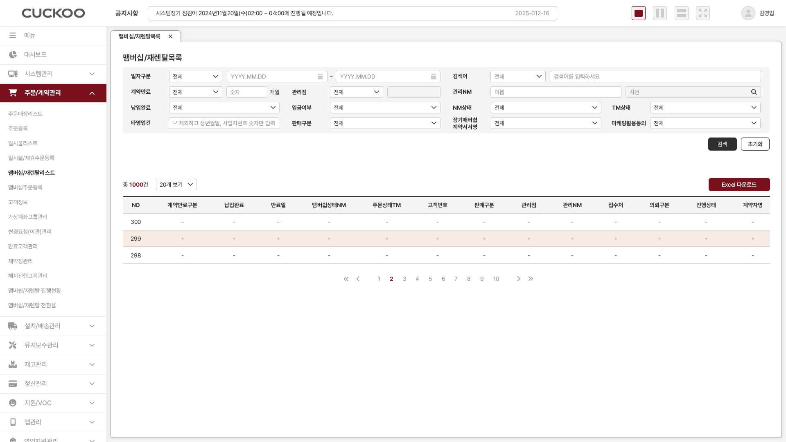
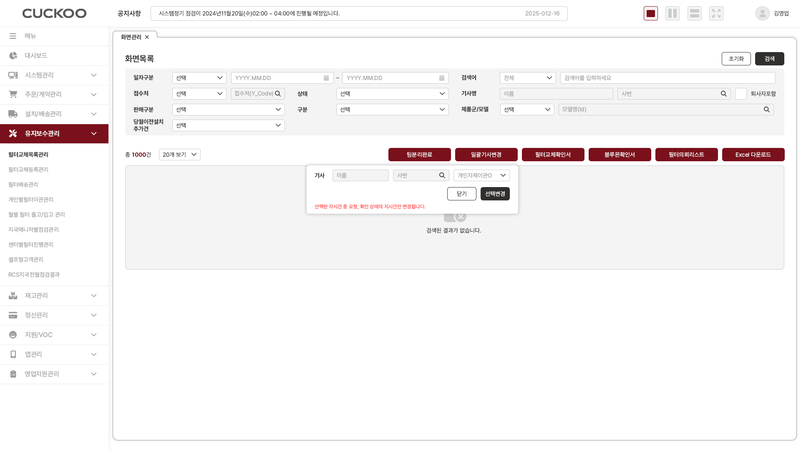
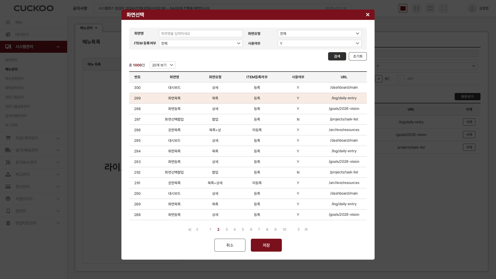
Resizable Portlet
하나의 화면을 상·하 또는 좌·우로 분할해 여러 업무 영역을 동시에 확인할 수 있도록 포틀릿 구조를 구현했습니다. 사용자가 Resizer를 직접 조작할 수 있으며, 한쪽 영역을 확장하면 반대 영역도 함께 계산되도록 구성했습니다.
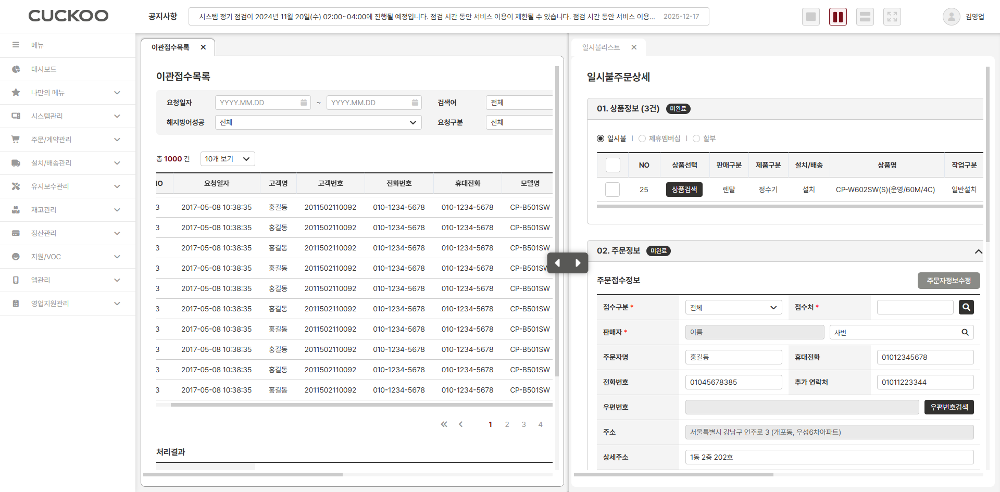
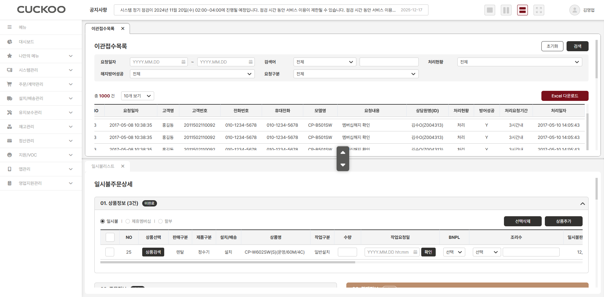
Admin Dark Mode
PC 관리자 시스템 전반에 Dark Mode를 적용해 검색 영역, DataTable, 팝업 등 공통 UI가 동일한 테마 기준으로 전환되도록 구성했습니다.
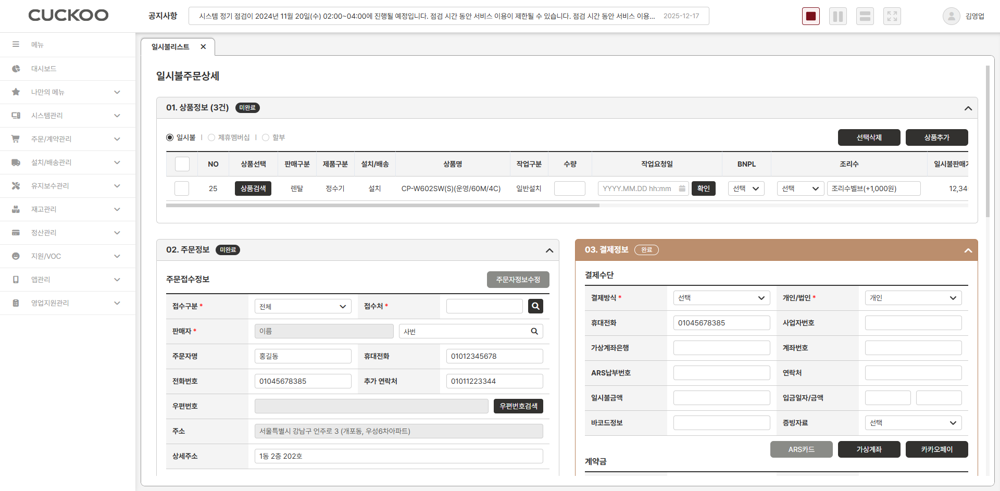
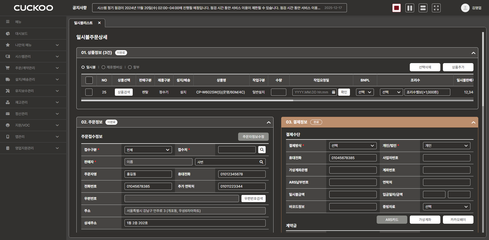
Result
PC의 대부분의 목록 화면을 동일한 구조와 UI 기준으로 구현할 수 있도록 정리해 반복 마크업과 화면별 편차를 줄였습니다. 새로운 목록 화면을 추가할 때 기존 구조와 컴포넌트를 재사용할 수 있어 작업 효율을 높였으며, 공통 UI 수정 사항도 여러 화면에 일관되게 반영할 수 있도록 유지보수성을 개선했습니다.
또한 포틀릿과 테이블의 크기 변경을 개별 화면에서 처리하지 않고 공통 컴포넌트와 Directive에서 관리해 복잡한 관리자 화면에서도 동일한 Scroll 및 Resize 동작을 유지할 수 있도록 했습니다.
02
DataTable Customization
Challenge
ERP 목록 화면은 한 화면에서 확인해야 하는 컬럼 수가 많고, 데이터 특성에 따라 필요한 컬럼 너비와 우선순위도 달랐습니다. 기존 정적 테이블만으로는 행 순서 변경이나 컬럼 크기·순서 조정과 같은 사용자 인터랙션을 효율적으로 구현하기 어려웠습니다.
또한 프로젝트에서 이미 사용하던 공통 테이블 스타일이 있었기 때문에 새로운 DataTable 컴포넌트를 도입하더라도 기존 화면과 동일한 UI 기준을 유지해야 했습니다.
Approach
필요한 기능을 제공하는 DataTable 컴포넌트를 검토한 뒤 PrimeVue DataTable을 적용했습니다. PrimeVue가 제공하는 기본 기능은 활용하되, 프로젝트의 컬럼 정의 방식과 기존 테이블 UI에 맞도록 공통 설정과 예외 처리를 추가했습니다.
Implementation
- Drag & Drop을 활용한 행 순서 변경
- 데이터 길이에 맞게 컬럼 폭을 조절할 수 있는 Column Resize 적용
- 중요한 정보를 원하는 위치로 이동할 수 있도록 Column Reorder 적용
- 컬럼별 width, minWidth, align 값을 공통 설정 데이터에서 관리
- Resize가 필요하지 않은 컬럼과 checkbox 영역 등의 예외 동작 조정
- PrimeVue 내부 구조에 맞춰 기존 프로젝트의 공통 테이블 UI 보완
Result
기존 정적 테이블 구조에서 제공하기 어려웠던 행 순서 변경과 컬럼 Resize / Reorder 기능을 적용해 데이터가 많은 업무 화면에서도 사용자가 필요한 정보를 보다 유연하게 확인할 수 있도록 했습니다.
또한 PrimeVue의 기본 기능을 그대로 사용하는 데 그치지 않고, 프로젝트에서 사용하는 컬럼 정의와 테이블 UI 기준에 맞게 공통 설정을 구성해 여러 업무 화면에서 동일한 방식으로 DataTable을 적용할 수 있도록 했습니다.
03
Mobile UI Standardization
Challenge
모바일 앱은 초기 작업 단계에서 전체 페이지의 약 60%가 여러 화면 단위로 먼저 구축되어 있었지만, 반복되는 페이지 구조와 공통 UI에 대한 명확한 기준이 부족했습니다.
같은 역할을 하는 화면에서도 Top App Bar 구성이나 페이지 타이틀, 콘텐츠 영역의 구조가 다르게 적용된 경우가 있어 기존 화면을 정리하면서 남은 페이지까지 일관된 기준으로 확장할 수 있는 구조가 필요했습니다.
Approach
기존 모바일 화면에서 반복되는 구조를 분석해 Top App Bar, 페이지 타이틀, 콘텐츠 영역 등 페이지를 구성하는 기본 규칙을 정의했습니다.
이후 기존 화면을 해당 기준에 맞게 재정비하고, 신규 페이지 역시 동일한 구조를 기반으로 구축했습니다. 또한 Dark Mode와 큰 글씨 모드가 특정 화면에 한정되지 않고 전체 모바일 앱에서 자연스럽게 동작하도록 레이아웃과 크기 단위를 함께 고려했습니다.
Implementation
Common Page Structure
- 페이지 유형별 Top App Bar 구성 기준 정의
- Home : 로고 / 알림 / 챗봇 / 메뉴
- Sub: 뒤로가기 / 페이지 타이틀
- 일부 Sub: 뒤로가기 / 페이지 타이틀 / 임시저장 Button
- 페이지 타이틀과 콘텐츠 영역의 기본 구조 통일
- 기존 화면을 공통 규칙에 맞게 수정하고 나머지 신규 화면 구축
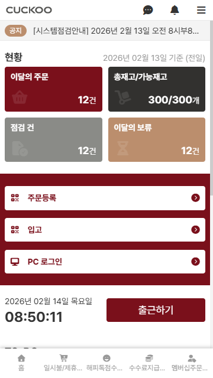
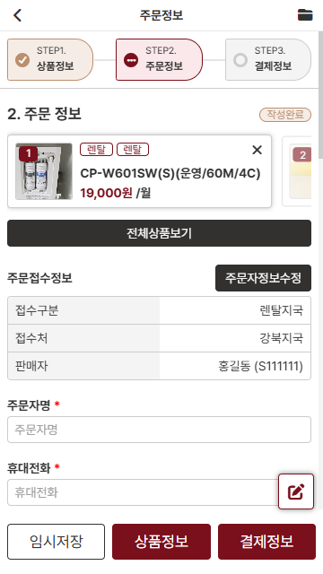
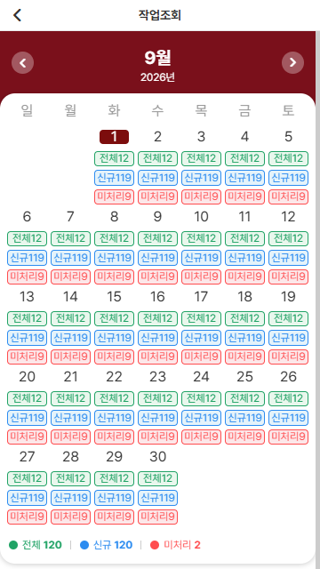
Dark Mode & Large Text Mode
- 전체 모바일 앱 공통 Dark Mode 적용
- html의 기본 font-size를 기준으로 rem 단위를 사용해 전체 텍스트 크기 확장
- 영역 높이를 고정값으로 지정하는 방식을 최소화
- Button, Input 등은 min-height와 padding을 기준으로 구성해 글자 크기가 변경되면 UI 높이도 자연스럽게 확장되도록 구현
- 여백은 px 단위를 사용해 글자 크기 변경 시 레이아웃 간격이 과도하게 커지지 않도록 조정
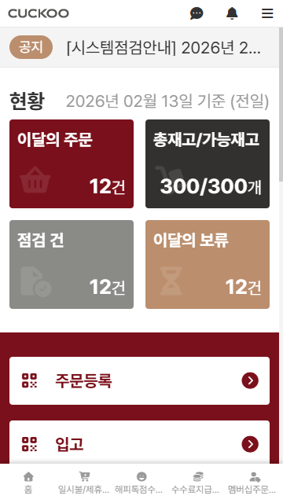
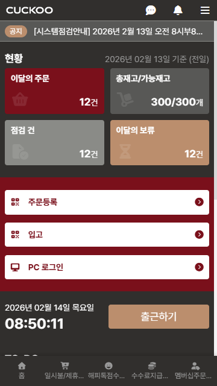
Result
화면마다 다르게 적용되어 있던 모바일 UI 구조를 공통 기준으로 재정비해 페이지 간 일관성을 높였습니다. 이후 추가되는 페이지 역시 동일한 구조를 기반으로 구현할 수 있어 UI 기준을 유지하면서 화면을 확장할 수 있도록 했습니다.
또한 고정 높이에 의존하지 않는 구조와 rem 기반의 텍스트 크기 체계를 적용해 전체 앱에서 큰 글씨 모드에 유연하게 대응했으며, Dark Mode와 세부 인터랙션까지 동일한 기준으로 적용해 모바일 UI의 완성도를 높였습니다.